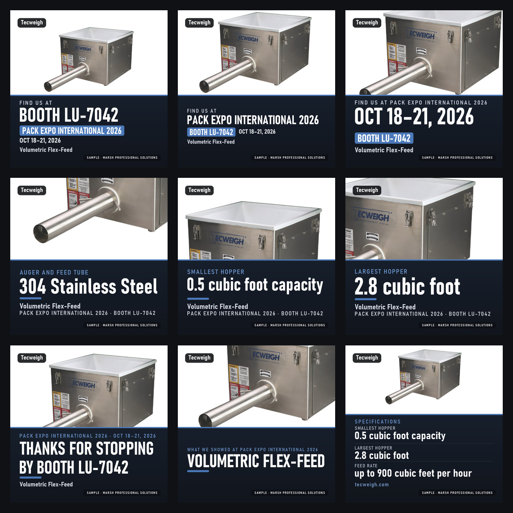
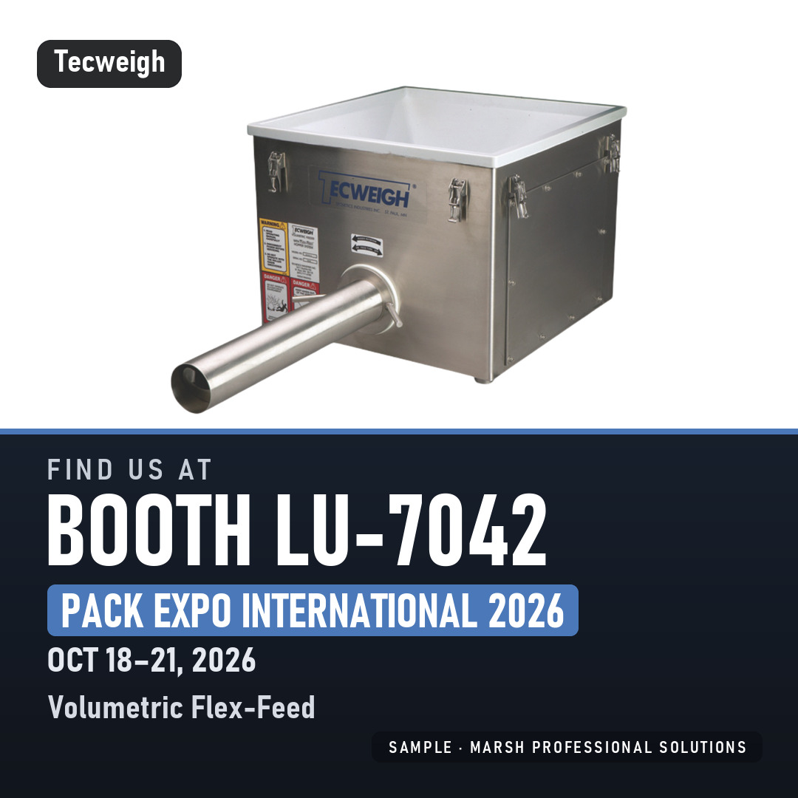
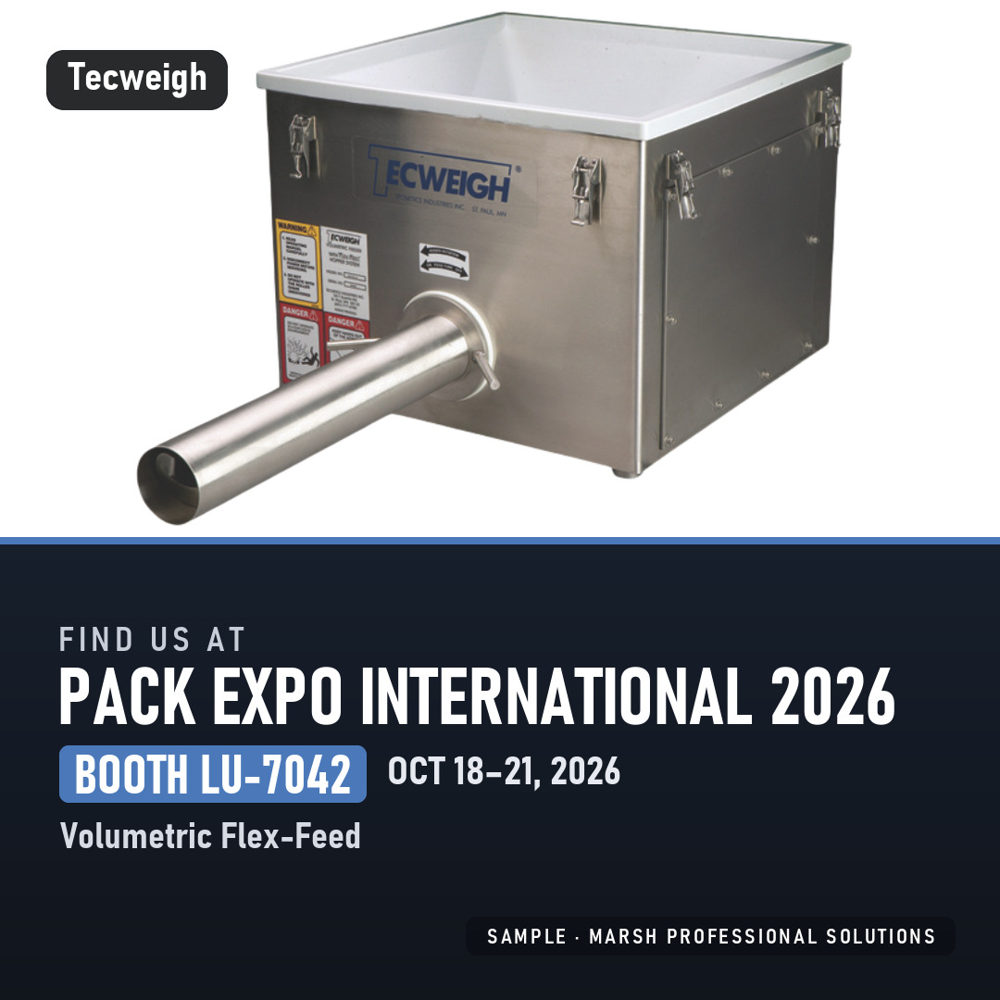
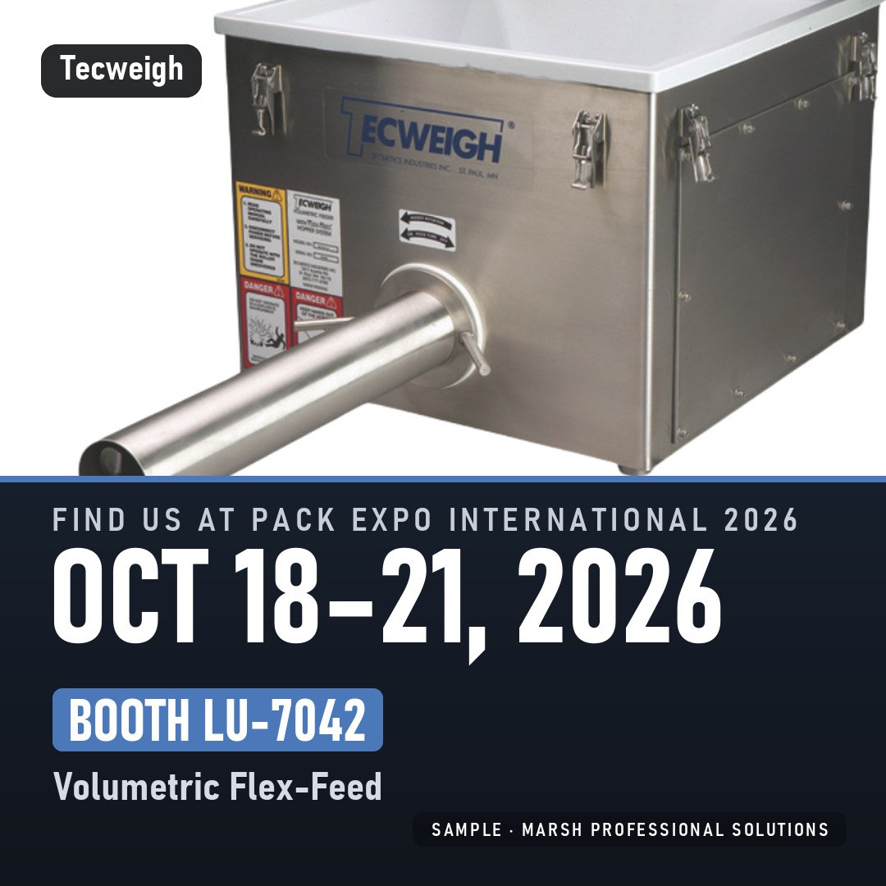
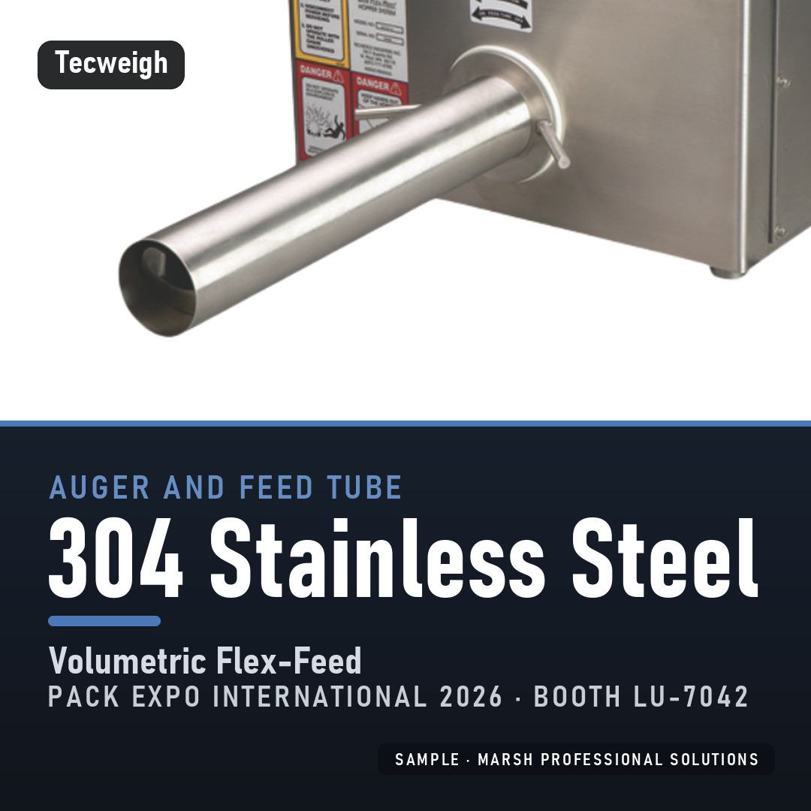
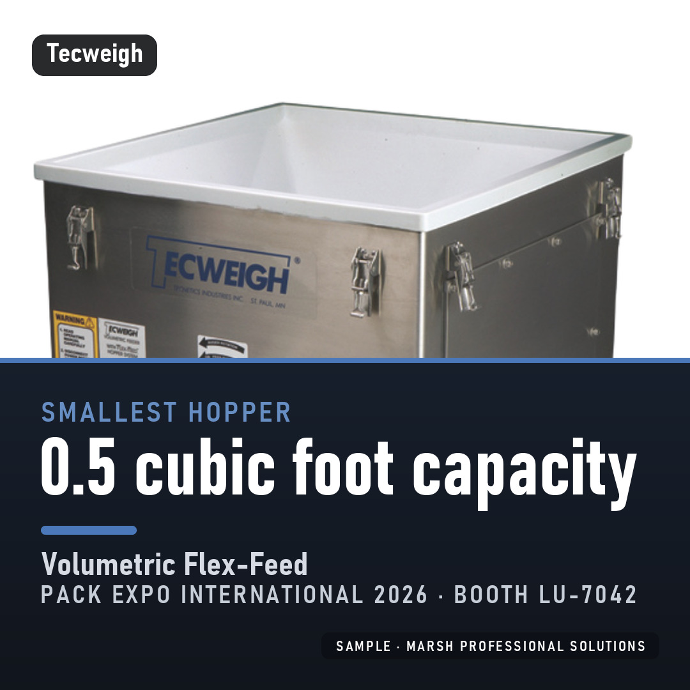
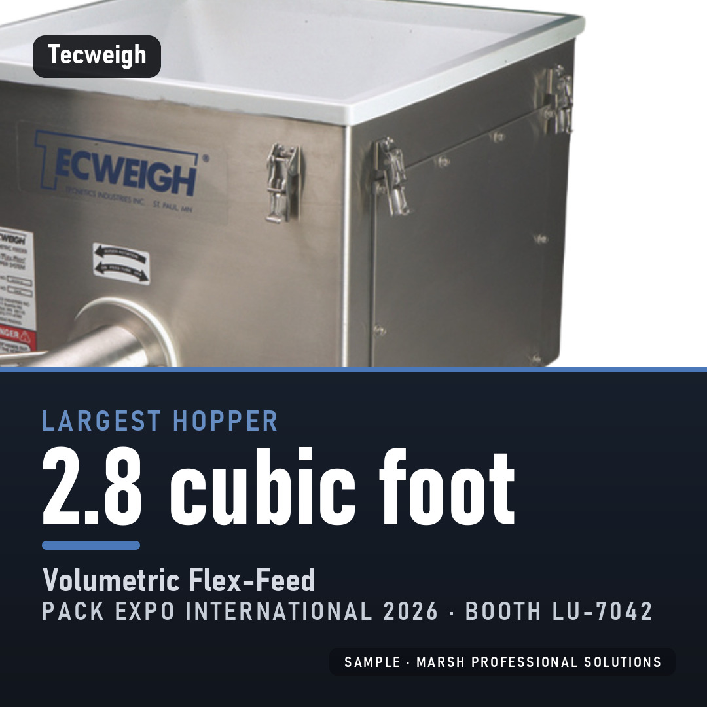
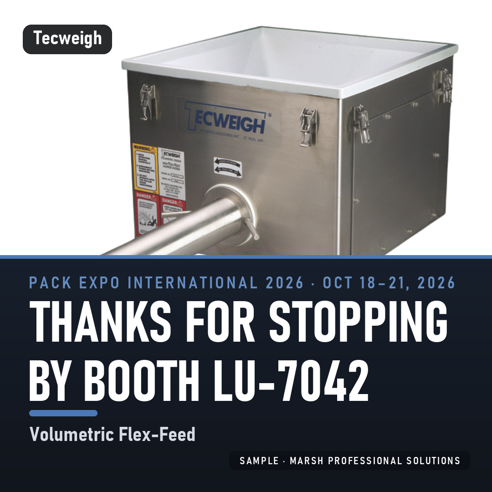
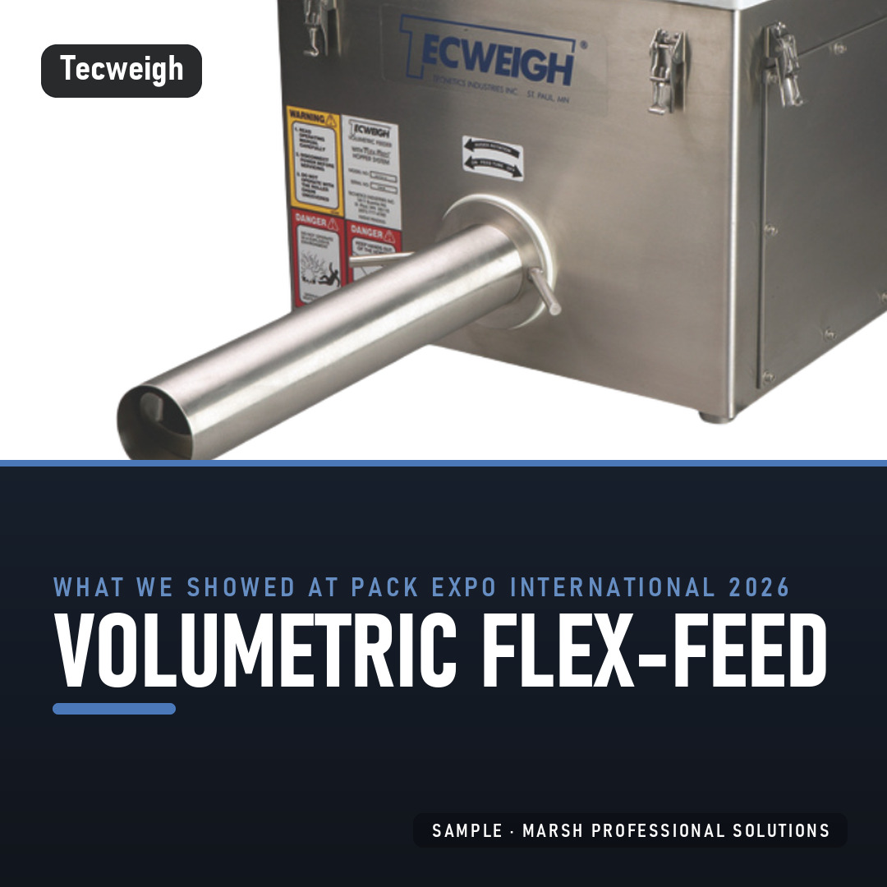
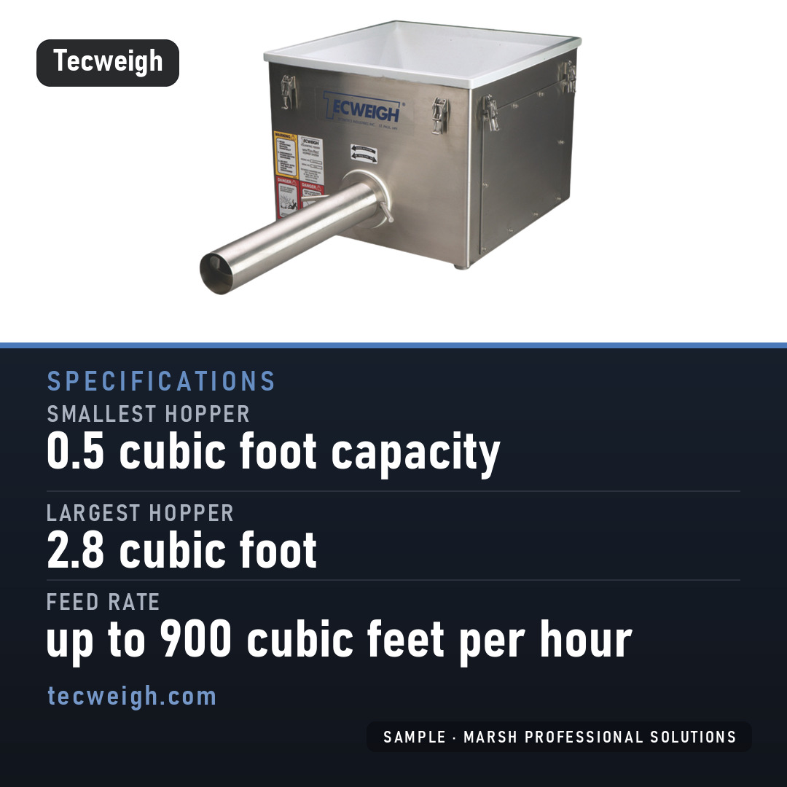

Show-week post pack sample
Nine posts for PACK EXPO International 2026, booth LU-7042, made from the photos and specifications on your website. Square tiles for LinkedIn and Instagram, with a caption and a posting date for each. The numbers on the tiles are copied from your published spec page. This sample carries a small SAMPLE mark.

The nine posts

Mon Oct 12 · teaser 1We'll be at PACK EXPO International 2026 on Oct 18 to 21, booth LU-7042. Stop by and ask us about the Volumetric Flex-Feed. #PACKEXPO
Tue Oct 13 · teaser 2PACK EXPO International 2026 is coming up (Oct 18 to 21). Find us at booth LU-7042 and bring your questions about the Volumetric Flex-Feed. #PACKEXPO
Fri Oct 16 · teaser 3PACK EXPO International 2026 opens Oct 18. Find us at booth LU-7042. #PACKEXPO
Mon Oct 19 · spotlight 1Auger and feed tube: 304 Stainless Steel. That's the Volumetric Flex-Feed. Find us at booth LU-7042, PACK EXPO International 2026. #PACKEXPO
Tue Oct 20 · spotlight 2On the Volumetric Flex-Feed, smallest hopper is 0.5 cubic foot capacity. Questions? Ask us at booth LU-7042. #PACKEXPO
Wed Oct 21 · spotlight 3Largest hopper on the Volumetric Flex-Feed: 2.8 cubic foot. We're at booth LU-7042, PACK EXPO International 2026. #PACKEXPO
Thu Oct 22 · postshow 1Thank you to everyone who stopped by booth LU-7042 at PACK EXPO International 2026. If we missed you, find us at tecweigh.com. #PACKEXPO
Mon Oct 26 · postshow 2What we showed at PACK EXPO International 2026: the Volumetric Flex-Feed. Details are on tecweigh.com. #PACKEXPO
Wed Oct 28 · postshow 3The Volumetric Flex-Feed, as published: smallest hopper 0.5 cubic foot capacity, largest hopper 2.8 cubic foot, feed rate up to 900 cubic feet per hour. More at tecweigh.com. #PACKEXPOPosting calendar
Keyed to the show dates (Oct 18 to 21, 2026).
| Date | Day | Post | When |
|---|---|---|---|
| 2026-10-12 | Mon | teaser 1 | 10 days before the show opens (earliest posting day) |
| 2026-10-13 | Tue | teaser 2 | 5 days before the show opens |
| 2026-10-16 | Fri | teaser 3 | 2 days before the show opens |
| 2026-10-19 | Mon | spotlight 1 | show day 2 |
| 2026-10-20 | Tue | spotlight 2 | show day 3 |
| 2026-10-21 | Wed | spotlight 3 | show day 4 |
| 2026-10-22 | Thu | postshow 1 | 1 day after the show closes |
| 2026-10-26 | Mon | postshow 2 | 3 days after the show closes (next weekday) |
| 2026-10-28 | Wed | postshow 3 | 7 days after the show closes |